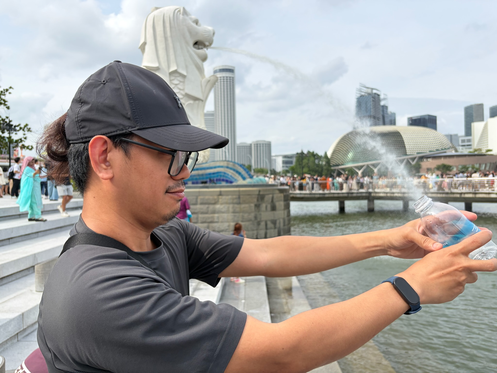
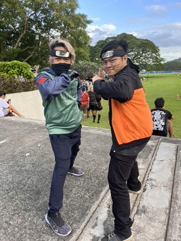
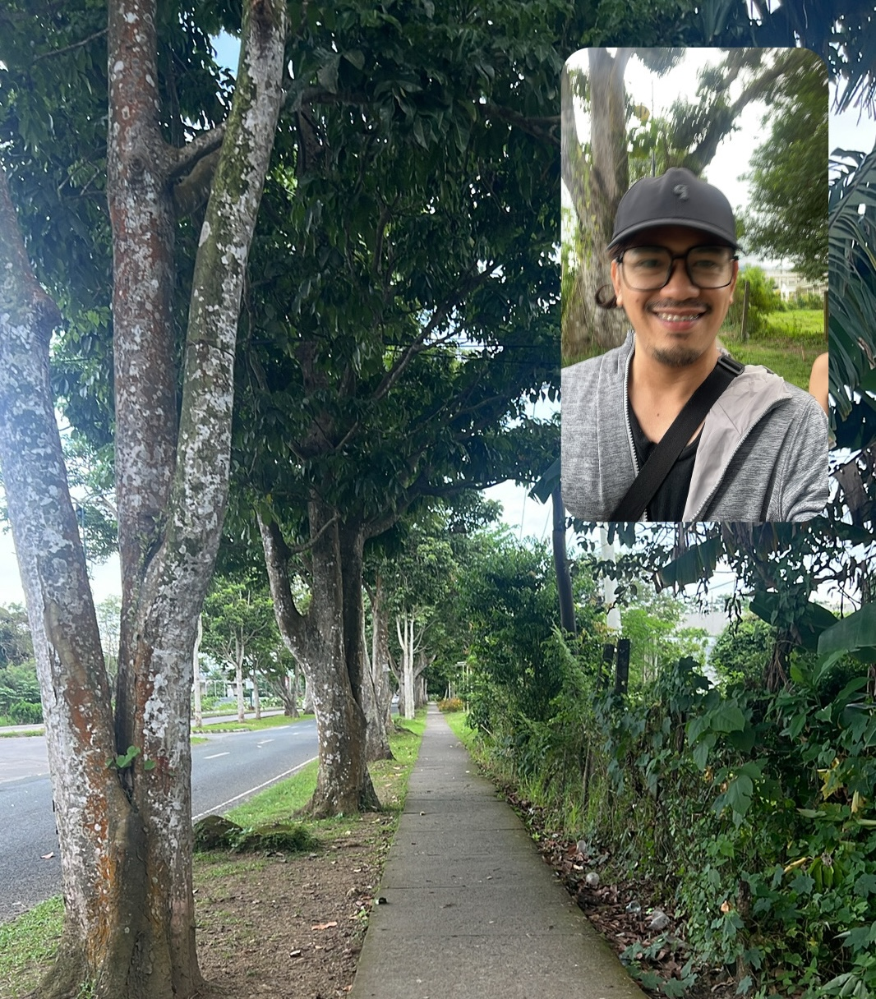
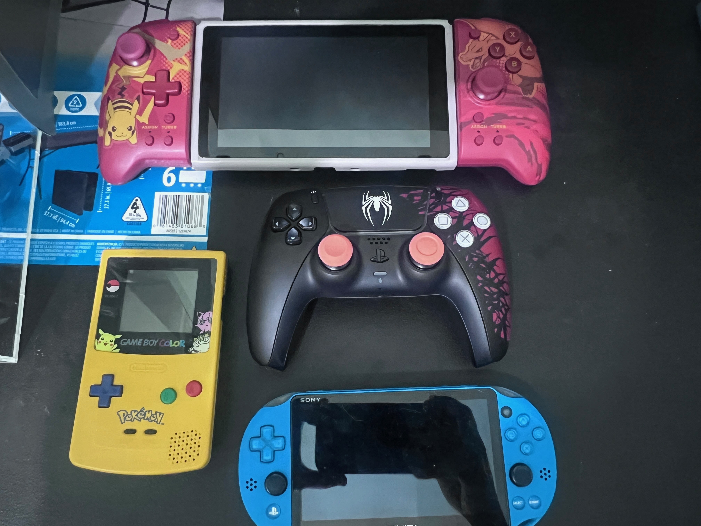
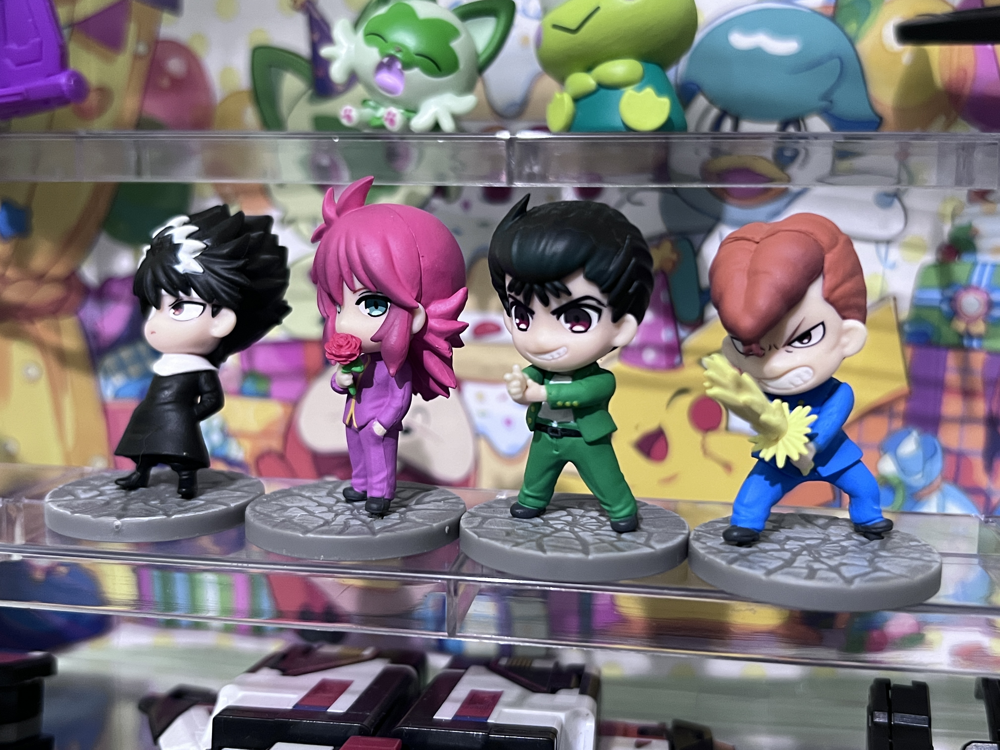

I’m a Filipino born and raised in Laguna, Philippines. I took BS Agriculture in college and now work as a freelancer. I’m currently studying Computer Science to upskill and hopefully get better job opportunities in the future.


Daily walks around the campus to stay fit and healthy, both mentally and physically.
I believe walking significantly helped improve my well being as I have been struggling with my anxiety and adjustment disorder.

I enjoy both board games and video games. I mostly play video games alone, but I play board games with friends.

This hobby started with collecting Gundam. Due to my busy schedule, I now collect toy figures since I have less time to build Gundam kits.
Email: jrpolicarpio@up.edu.ph
You can also follow me on Facebook to see some of my fitness content.